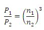
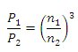

The output temperature depends on air temperature, humidity, rpm of the fan, flow rate and glykol content.
wet –bulb temperature
power calculation in case of speed regulation
proportionality rule

water consumption
Cooling_Tower
Path:
CARNOT/Source/Chiller
Purpose:
Calculates the output THV and the energy and water consumption of the closed
circuited cooling tower.
Description
The output temperature depends on air temperature, humidity, rpm of the fan,
flow rate and glykol content.
wet –bulb temperature

power calculation in case of speed regulation
proportionality rule

water consumption
The saturation pressure p_s is calculated with the simplified approximation
of Glück
| Symbol | used for |
|---|---|
| c | specific heat capacity in J/kg/K |
| h | specific enthalpy in J/kg |
| n | rotation speed in 1/s |
| m_dot | mass flow in kg/s |
| p | pressure in Pa |
| P | electric power in W |
| Q_dot | thermal power in W |
| t | temperature |
| x | water content of air in kg water / kg dry air |
Input:
| THBin | : | Thermo-Hydraulic Bus of the inlet, only fluid-typ water/glycol |
| WDB | : | Weather Data Bus |
| rpm_fan | : | rotation speed in rounds per minute, limited to the range 0 … 824 1/min |
| control_fan | : | On / off signal of the fan, value 0 or 1 |
Output:
| THBout | : | Thermo-Hydraulic Bus of the outlet |
| data_logging | : | data for logging, see Parameter and Dialog Box |
Parameters and Dialog Box
The cooling tower mask is an overview about the performance data and about the
distribution of the data logging bus-signal.
Examples:
Open the example explorer from the Matlab command window
ExampleBrowser
or load the examples via the CARNOT library.
Literature:
Mario Thesing : Bachelor-Thesis: Solare Kühlung – Modellerstellung und -validierung
eines Kühlturmes unter Matlab / Simulink / Carnot, Fachhochschule Düsseldorf,
Februar 2010
VDI Wärmeatlas, 7.Auflage, VDI Verlag
Taschenbuch für Heizung + Klima Technik 09/10, Oldenburg Industrieverlag
Fortschritt-Bericht VDI, Berechnungsmodell der nichtadiabaten Verdunstungskühlung
in Fluidtürmen und Verdunstungskondensatoren
VXI Verdunstungskühler, Auslegung und Technische Daten, BAC Baltimore Aircoil
VXI Lühlturm mit geschlossenem Kreislauf, BAC Baltimore Aircoil
Characteristics:
| Direct Feedthrough | : | Yes |
| Sample Time | : | Inherited from driving block |
| Vectorized | : | No |